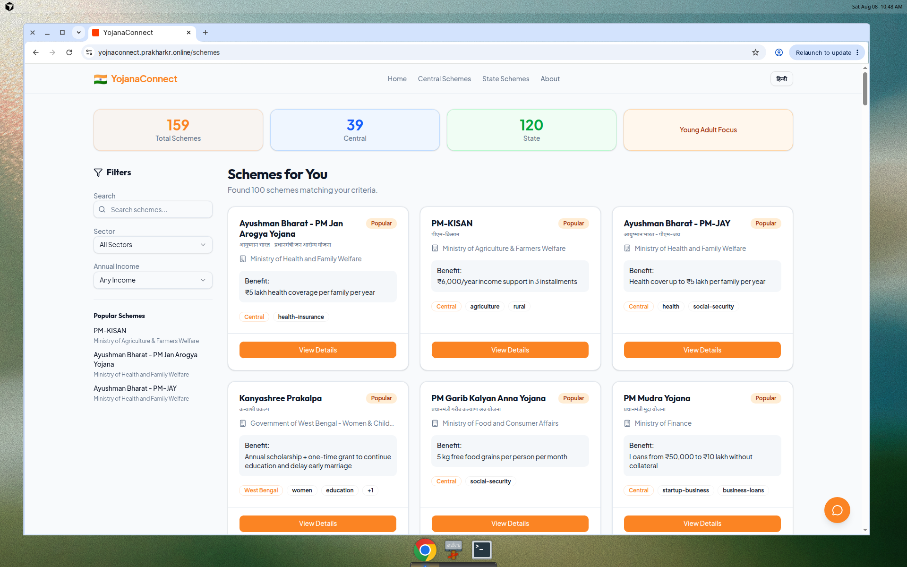
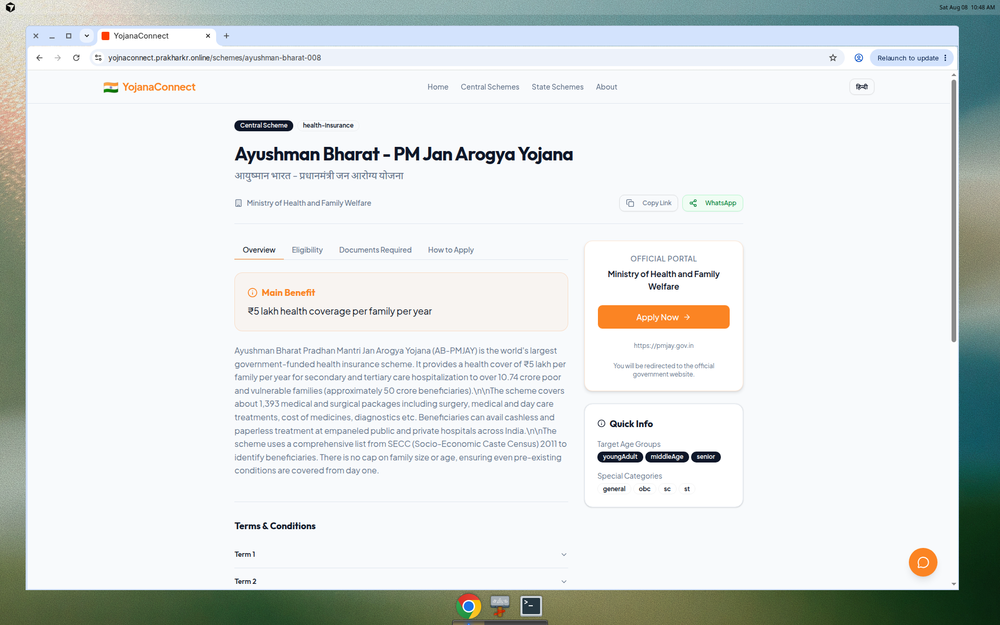

Live Production · Technical Pitch
YojanaConnect
Enterprise-grade Welfare Scheme Discovery Platform
Age-aware · Bilingual · REST + MySQL · Citizen → Official Portal handoff
https://yojnaconnect.prakharkr.online/schemes
React 19
TypeScript
Express 5
MySQL 8
TanStack Query
i18next
01 · Context
The discovery gap
400+ schemes exist. Citizens still fail at step one: finding the right one.
Fragmented sources
Ministry sites, PDFs, and state portals — no single citizen-grade entry.
Opaque eligibility
Bureaucratic language blocks rural and first-time digital users.
Language friction
English-first UX excludes Hindi / regional audiences at scale.
No personalization
Catalog browsing, not life-stage intelligence.
02 · Product Thesis
Life-stage first discovery
01
Age signal
Map citizen age → Teen / YA / Middle / Senior.
02
Filter engine
Sector · income · keyword · central/state.
03
Scheme intel
Eligibility, docs, steps, terms — one screen.
04
Official handoff
Apply Now opens government portal. No PII.
Outcome: “Which yojana am I eligible for?” → shortlist in under 60 seconds.
Live metrics
Production snapshot
- Age-personalized grid + popularity ranking
- Sector / income / keyword filters with live counts
- YojanaBot guide + EN / हिन्दी i18n
- WhatsApp share · official Apply Now handoff

Live /schemes — Young Adult focus
03 · UX Surfaces
Citizen journey, productized

Scheme detail
04 · Architecture
3-tier, audit-friendly design
Chosen for clarity, gov-IT familiarity, and horizontal scale later.
PRESENTATION
React 19 SPA · TypeScript · Vite
TanStack Query · Wouter · i18next · Tailwind v4 · Radix/shadcn · Framer Motion
APPLICATION
Node.js · Express 5 REST
Controllers · parameterized SQL · JSON field parsers · CORS · /api/healthz
DATA
MySQL 8+ knowledge base
JSON columns for age/sectors · popularity_score ranking · connection pooling
05 · Runtime Path
Request → filter → render
01
Browser stores ageGroup in localStorage after age slider
02
GET /api/schemes?ageGroup=§or=&incomeLimit=&search=
03
Express builds parameterized WHERE — JSON_CONTAINS, income brackets, LIKE
04
ORDER BY popularity_score → parse JSON fields → SchemeCards
05
Detail /api/schemes/:id → Apply Now = official government URL
06 · Engineering Signal
Filter contract (conceptual)
// age + sector + income + search — all parameterized
GET /api/schemes?ageGroup=youngAdult§or=agriculture
// MySQL filter primitives
JSON_CONTAINS(age_groups, '"youngAdult"')
JSON_CONTAINS(sectors, '"agriculture"')
(income_limit IS NULL OR income_limit >= ?)
name LIKE ? OR description LIKE ?
ORDER BY popularity_score DESC
Ranking today = popularity score (deterministic, explainable). ML recommendation is a roadmap layer — not overclaimed as live.
07 · Stack
Production technology choices
Frontend
- React 19 + TypeScript
- Vite build pipeline
- TanStack Query cache
- Wouter routing
- i18next EN / HI
- Tailwind CSS v4
- Radix / shadcn UI
- Framer Motion
Backend
- Node.js runtime
- Express 5 REST
- mysql2 pool
- dotenv secrets
- CORS edge policy
- JSON field parsers
- pnpm monorepo
- Orval typed client
Data & Ops
- MySQL 8 JSON cols
- Seed SQL catalog
- Nginx reverse proxy
- Static SPA deploy
- Healthz probe
- Env-based config
- HTTPS production
- Mobile-first civic UX
08 · API Contracts
Read-optimized REST surface
Ready to power CSC kiosks, WhatsApp bots, or state shell apps later.
GET
/api/healthz
Liveness probe
GET
/api/schemes
Filtered list — age, sector, income, search, state
GET
/api/schemes/:id
Full scheme document
GET
/api/schemes/:id/related
Related / adjacency set
GET
/api/schemes/popular
Top-N by popularity_score
GET
/api/schemes/stats
Aggregate KPIs for dashboard
GET
/api/sectors
Sector taxonomy (+ age filter)
09 · Data Model
Flexible scheme knowledge base
schemes
id · name · name_hindi · ministry
age_groups (JSON) · sectors (JSON)
income_limit · categories · benefit
eligibility / documents (JSON)
how_to_apply · official_link · deadline
is_state · state · tags · popularity_score
sectors
sector_id · name · name_hindi · age_groups · icon
Why JSON columns?
Multi-value tags without join explosion. Fast metadata iteration. Queryable via MySQL JSON_CONTAINS.
10 · Trust
Security & privacy model
Current posture
- Discovery layer — not a benefit processor
- No Aadhaar / bank / KYC collected
- Apply on official government portals
- Parameterized SQL queries
- Secrets via environment variables
- HTTPS + Nginx in production
Hardening path
- Remove public debug endpoints
- Suppress stack traces at edge
- Tighten CORS to known origins
- Rate-limit public GET APIs
- WAF / CDN + audit logging
- Auth when bookmarks/admin ship
11 · Scale
Reliability roadmap
NOW
MVP stack
SPA + Node API + MySQL. Read-heavy catalog. Connection pool.
NEXT
Cache + CDN
Redis for popular lists. Static edge cache for SPA assets.
SCALE
Horizontal API
Stateless replicas behind LB. MySQL read replicas.
GOV
Managed host
NIC / state DC / K8s. Observability + SLOs.
12 · Differentiation
Why this wins attention
Life-stage entry
Age → shortlist, not ministry-first browsing.
Unified scheme intel
Eligibility + docs + steps + official link in one flow.
Bilingual native
EN/HI UI + Hindi names in the data model.
Extensible API
Same REST can power CSC / WhatsApp channels.
13 · Tamil Nadu
Pilot roadmap
PHASE 1
Localize
Tamil UI strings · top TN schemes seed · content QA with department sources.
PHASE 2
Pilot
1–2 districts / CSC · discovery KPIs · citizen feedback loop.
PHASE 3
Operate
Admin CMS · analytics · SLA hosting on government infrastructure.
The ask
Pilot YojanaConnect
for Tamil Nadu
- Verified TN scheme content + Tamil language pack
- Preferred hosting guidance (state DC / cloud)
- CSC / district discovery pilot with measurable KPIs
https://yojnaconnect.prakharkr.online/schemes
Thank you — ready for architecture deep-dive & live walkthrough